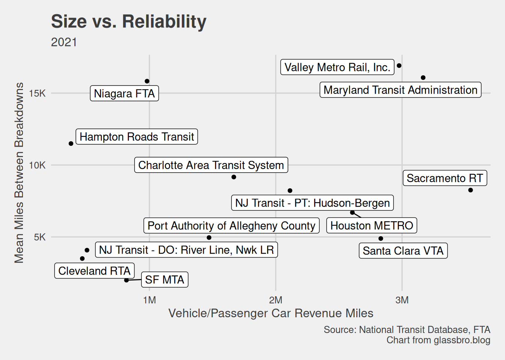
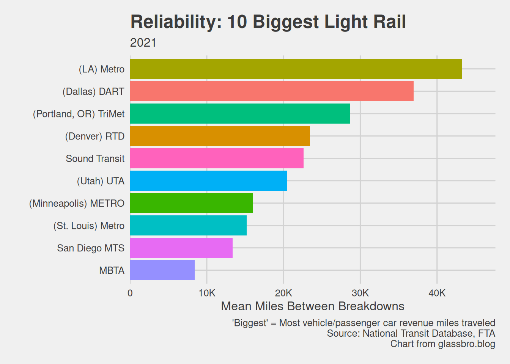

But all of a sudden, right at the [edge] of the [Hudson], Puff! Chug! Squeak! Squea-ea-eak! The Engine broke down; the wheels slid along a little farther with a shrieking, wailing cry and then stood perfectly still. Now how was the train to cross the [Hudson] and get her [commuters] over there in time for the [work day]?
— Modified from “The Little Engine That Could,” My Bookhouse: The Latch Key (1921), p. 193
In this post, I rank transit agencies by their breakdown frequency, or Mean Distance Between Breakdowns1. This metric answers the question: How many miles do the trains/buses travel before breaking down, on average? The higher, the better. My data source is the FTA’s National Transit Database for 2021. I cover my methodology in more detail elsewhere.
I pay special attention to transit agencies operating in New Jersey and nearby like NJ Transit PATH, PATCO, and the MTA because I’ve ridden with them.
I only rank agencies in the transit categories listed in the table of contents. Others like Bus Rapid Transit, Commuter Bus, and Streetcar Rail aren’t here.
Commuter Rail
The rankings:
The Northern New England Passenger Rail Authority operates the most reliable commuter rail. In my area, PennDoT comes in 2nd and Metro-North and LIRR rank well. NJ Transit falls exactly in the middle, 14th most reliable out of 28 reporting agencies.
Plotting this data clarifies things. (Reference lines are averages.) The Big 3 commuter rails–Metro-North, the Long Island Rail Road, and NJ Transit–are huge; among them, NJT breaks down the most often, and is less reliable than average.
Finally, here are the 10 largest (by miles traveled) commuter rails:
NJ Transit Commuter Rail takeaways
|
Bus
Note that NJ Transit has 2 records: One for its Purchased Transit (PT) or contracted buses, and one for its Directly Operated (DO) buses. While NJT’s PT buses break down less often, they also drive much less than the DO buses. (And apparently the PT ones sometimes don’t show up.)
It’s not the prettiest picture, but a few things are clear. Like its commuter rail, NJ Transit’s bus system is almost peerlessly large. NJT buses break down more often than average, but do fairly well compared to similarly huge agencies, beating NYC’s MTA, LA’s Metro, Chicago’s CTA, and Philly’s SEPTA. Boston’s MBTA, though relatively smaller, does quite well.
Focusing on the 10 largest bus systems (again, by miles traveled), NJT comes out on top.
NJ Transit Bus takeaways
|
Light Rail
NJ Transit is hidden in the “Small, Breaky” quadrant. Cutting out the Big ones:

We now see NJ Transit reports two light rail groups to the FTA: The Hudson-Bergen LR, which is purchased transit, and a combined record for the directly operated River Line and Newark LRs.
Neither of NJT’s LR groups do particularly well, and the directly operated lines are the less reliable ones.
I find it odd that NJ Transit runs some of the largest commuter rail and bus systems in the country, yet some of the tiniest light rails. Even combining the PT and DO vehicle/passenger car revenue miles doesn’t place them among the 10 largest. But that’s for another post.
NJ Transit Light Rail takeaways
|
Now beyond New Jersey, here are the largest light rail services:

LA, Dallas, Portland Oregon, and Denver have great, big light rail. Let’s be like them.
Heavy Rail
NJ Transit doesn’t have heavy rail, but 2 agencies do run heavy rail in NJ:
- The Port Authority Trans-Hudson Corporation (PATH), running trains from Essex and Hudson counties into NYC;
- The Port Authority Corporation (PATCO), running trains from Camden County into Philadelphia.
WMATA is the most reliable, but PATH ranks 4th. PATCO lags behind in 10th out of 15.
Plotting it:
We see just how peerlessly massive the NYC subway is. It breaks down as often as much smaller systems, but I’m not sure this is a fair comparison. In any case, Washington state’s WMATA is great; SEPTA, San Francisco’s BART, and PATH are good; and Chicago’s CTA is bad. PATCO is hidden in the Small and Breaky cluster.
Zooming in on Small ones:
Now we see PATCO. For all the praise PATCO rightfully gets in other areas, it breaks down more often than the similarly sized Maryland TA and the bigger LA Metro.
Finally, here are the 10 biggest heavy rail systems:
Across the Delaware from PATCO, SEPTA is both much bigger and more reliable, so I believe PATCO can improve.
PATH & PATCO takeaways
|
Conclusions
None of NJ Transit’s modes are the worst for breakdown frequency. Among their peers:
NJT commuter rail is mediocre
NJT buses are the best
NJT light rail is bad
For heavy rail in NJ:
PATH is good
PATCO is bad
To be clear, by “good” or “bad” I just mean “more or less [respectively] reliable than average and/or similarly sized peers.” These are my completely subjective judgements of the above rankings.
Footnotes
Calculated as \[\frac{Vehicle And Passenger Car Revenue Miles}{Total Mechanical Failures}\] where \[Total Mechanical Failures = Major Mechanical Failures + Other Mechanical Failures\].
Vehicle/Passenger Car Revenue Milesmeans “The miles that vehicles (or passenger cars, for rail service) travel while in revenue service (vehicle revenue miles [VRM]) plus deadhead miles. Vehicle miles exclude miles for charter services, school bus service, operator training, and vehicle maintenance testing.” Source: The “Data Dictionary” tab of this spreadsheet.↩︎